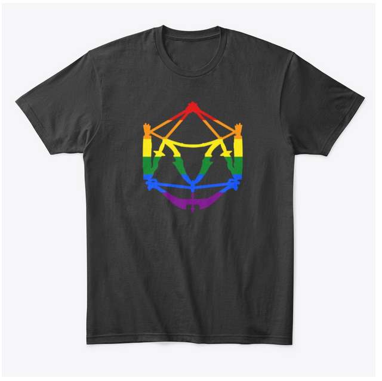
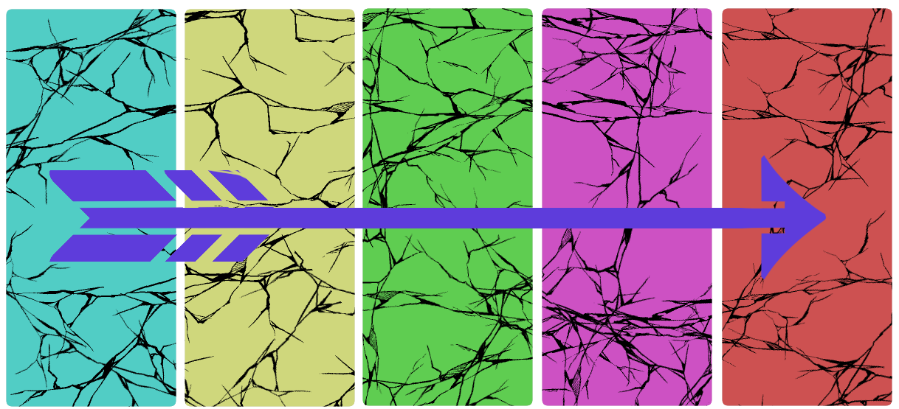
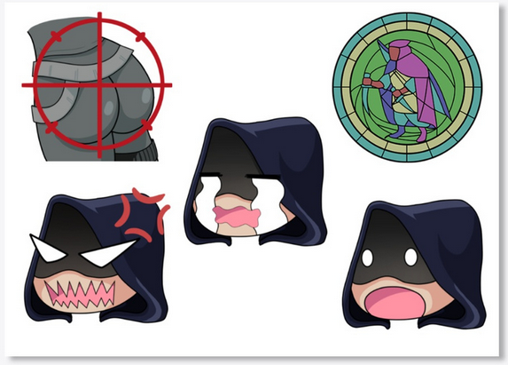

Fractured Rogue Merchandise
Problem
The designs for the merchandise for Fractured Rogue Studios were originally created by the Director of the studio. My job came in the form of translating
his ideas into clean and functional prints for Tshirts and other possible merch.
Insight
The Director has excellent vision and fun ideas, however not all of them will read well on a Tshirt due to sizing or color. I wanted to keep as closely to his original idea as I could while still creating merch that stands out and is fun to wear.
Approach
I made sure to be in close contact with the Director throughout the process. Any big color changes I did, I ran them by him to make sure I was keeping the image he had in mind. Communication was key in this role and in doing so it made the process both fun and rewarding.
Solution
I recreated the art using vector images in Illustrator so that it can easily be resized and create a very clean, professional look. I changed some of the colors
so they became more vibrant to create a sense of fun, which fit in the brand well as Fractured Rogue Studios creates simple and fun video games.
Result/Outcome
I’m proud of how the shirts came out and the Director absolutely loved them. They print well on the shirts and thanks to it being made in vector, it easily allows for stickers, coffee mugs, or other types of merch they want.


